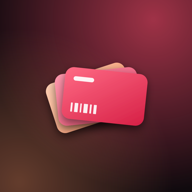

CardoOchrana soukromí
Platné od 7. 10. 2026 · English version below
Kdo za aplikací stojí
Aplikaci Cardo vyvíjí a provozuje fyzická osoba Tomáš Vohradník, Česká republika. Kontakt: vohradnik.tomas@seznam.cz.
Stručně
Cardo nemá uživatelské účty, žádný server ani reklamy a nesbírá žádnou analytiku. Tvoje karty jsou uložené pouze v tvém telefonu. Provozovatel k nim nemá přístup.
Jaká data aplikace zpracovává
- Věrnostní karty (název, číslo karty, barva, kdy a kolikrát byla použita) — uložené jen v zařízení.
- Fotoaparát — slouží jen ke čtení čárového/QR kódu v reálném čase. Snímky se neukládají ani neodesílají.
- Fotky — jen pokud sám vybereš fotku karty, aby z ní aplikace přečetla kód. Fotka se neukládá ani neodesílá.
- Poloha (jen při používání aplikace, nikdy na pozadí) — aby aplikace poznala, ve kterém obchodě jsi, a otevřela jeho kartu. Porovnání probíhá v telefonu se seznamem prodejen, který je součástí aplikace, a s místy, kde jsi kartu dříve použil (tato místa se ukládají jen v zařízení). Jen když aplikace v telefonu nic nenajde, odešle přibližné souřadnice anonymně (bez jakéhokoli identifikátoru) do veřejné služby OpenStreetMap Overpass API, aby zjistila okolní obchody. Používání polohy můžeš kdykoli vypnout v Nastavení aplikace nebo telefonu.
Zálohy
Aplikace si každý den uloží zálohu karet do svého úložiště v telefonu. To je součástí běžné zálohy telefonu (iCloud / Google), pokud ji máš zapnutou — tu spravuje Apple nebo Google podle tvého nastavení. Ruční export karet do souboru je jen na tobě a soubor zůstává tam, kam ho uložíš nebo pošleš.
Sdílení s třetími stranami
Data neprodáváme ani nesdílíme. Jedinou výjimkou je anonymní dotaz na okolní obchody do OpenStreetMap popsaný výše (zásady OSMF).
Smazání dat
Kartu smažeš přímo v aplikaci (detail karty → ⋯ → Smazat). Odinstalováním aplikace se smažou všechna její data v telefonu. Účty neexistují, takže není co mazat jinde.
Děti
Aplikace není určena dětem do 13 let a vědomě od nich nesbírá žádné údaje.
Změny
Pokud se tyto zásady změní, aktualizovaná verze bude na této stránce s novým datem platnosti.
Privacy Policy
Effective 7 October 2026
Who we are
Cardo is developed and operated by Tomáš Vohradník, an individual based in the Czech Republic. Contact: vohradnik.tomas@seznam.cz.
In short
Cardo has no user accounts, no servers, no ads and no analytics. Your cards are stored only on your device; the developer has no access to them.
Data the app processes
- Loyalty cards (name, card number, colour, when and how often used) — stored on your device only.
- Camera — used only to read a barcode/QR code in real time. No images are stored or transmitted.
- Photos — only when you pick a photo of a card so the app can read its code. The photo is not stored or transmitted.
- Location (while using the app only, never in the background) — to recognise the shop you are in and open its card. Matching happens on the device against a list of store locations bundled with the app and places where you used a card before (stored on the device only). Only if nothing matches on the device, approximate coordinates are sent anonymously (without any identifier) to the public OpenStreetMap Overpass API to look up nearby shops. You can turn this off in the app or system settings.
Backups
The app keeps a daily backup of your cards in its own storage on the device, which is included in your regular device backup (iCloud / Google) if enabled — managed by Apple or Google under your settings. Manual exports are files you control.
Third parties
We do not sell or share data. The only exception is the anonymous nearby-shop query to OpenStreetMap described above.
Deleting data
Delete a card in the app (card detail → ⋯ → Delete). Uninstalling the app removes all of its data from the device. There are no accounts, so there is nothing to delete elsewhere.
Children
The app is not directed to children under 13 and does not knowingly collect their data.
Changes
Any changes will be published on this page with a new effective date.